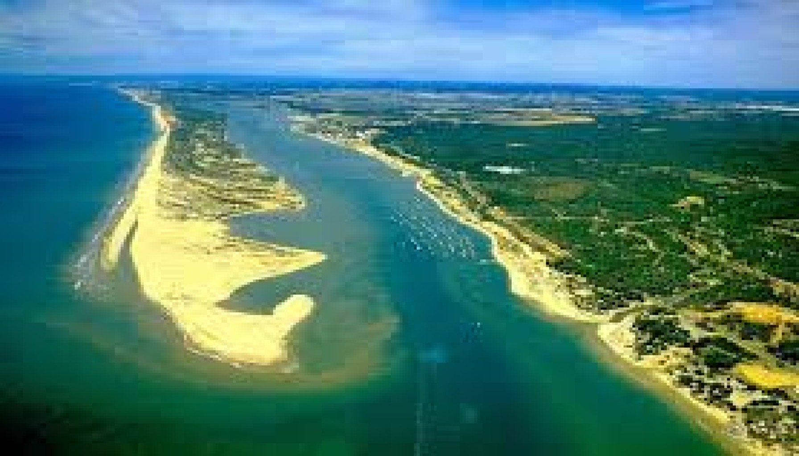

El Rompido, en la provincia de Huelva, es un pequeño paraíso que parece escondido del mundo. Desde el primer momento, su tranquilidad y belleza natural me cautivaron. Este encantador pueblo costero, rodeado por la ría del Piedras y la Flecha de El Rompido, ofrece paisajes únicos que parecen pintados por la luz del sol al atardecer. La sensación de paz al caminar por su puerto, con las barcas balanceándose suavemente en el agua, es indescriptible. Pero lo más impresionante fue la vista desde la Flecha, una lengua de arena que se extiende paralela a la costa, formando una barrera natural entre el océano Atlántico y la ría. Este fenómeno, creado por la naturaleza, es un lugar mágico donde la tierra, el agua y el cielo se encuentran en perfecta armonía.
